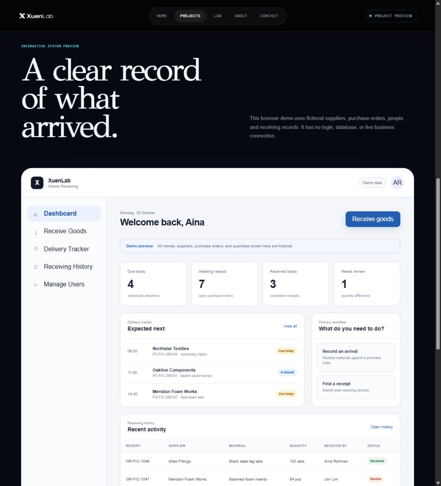

XUEN.OS
Refining the portfolio, project system, and Liquid Obsidian interface into one coherent experience.
Personal operating system V.01
Building practical tools and systems with AI, Python, and curiosity.
I turn messy ideas into calm, capable systems.
I’m Xuen — a builder working at the intersection of artificial intelligence, thoughtful design, and practical software.
I care less about technology for its own sake and more about what it unlocks: clearer work, better decisions, and a little more room to think.
Refining the portfolio, project system, and Liquid Obsidian interface into one coherent experience.
A browser-testable receiving workflow for incoming materials, delivery tracking, and operational records.
A personal real-time 3D vehicle experience focused on form, lighting, materials, and camera views.
A selection of experiments, tools, and systems shaped around real questions.
An AI thinking companion that turns scattered notes into clear next actions.
PYTHON / LLM / PRODUCTA modular automation layer for the quiet, repetitive work behind creative teams.
PYTHON / API / AUTOMATIONA personal research system for collecting less and understanding more.
LOCAL-FIRST / SEARCH / WRITING
A personal real-time 3D experience for studying vehicle form, lighting, materials, and camera views in the browser.
REAL-TIME 3D / CAMERA / LIGHTING VIEW CASE STUDY ↗
A practical internal tool for managing incoming materials, tracking deliveries, and maintaining receiving records in a furniture manufacturing workflow.
WORKFLOW / RECORDS / OPERATIONS OPEN INTERACTIVE PREVIEW ↗A living collection of half-formed thoughts, weekend builds, and useful accidents.
Simulate two financial paths and find where the outcome changes.
Single-purpose AI tools that do one job well.
A focus timer that knows when to disappear.
Patterns for better human–AI collaboration.
05 / OPEN CHANNEL
Have a useful problem?
LET’S TALK↗